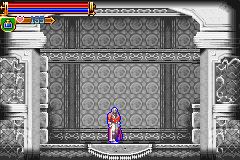

|
Equipment
WHIP
Normal
Crushing Stone

STR -5
Note : กด "โจมตี" ค้างไว้ เมื่อชาร์จพลังเต็มให้ปล่อย
ใช้ทำลายกำแพงบางแห่ง
Steel Tip
Str +10
Platinum Tip
STR +20
Energy Circle
Note : กด "โจมตี" ค้างไว้ จะหมุนแส้รอบๆ ตัว
Bullet Tip
Str +5
Note : หากใช้เมื่อมี HP เต็ม จะยิงลูกไฟออกมาด้วย
Red Stone
Str +2
Note : โจมตีติดธาตุ "ไฟ"
Blue Stone
Str +2
Note : โจมตีติดธาตุ "น้ำแข็ง"
Yellow Stone
Str +2
Note : โจมตีติดธาตุ "สายฟ้า"
Green Stone
Str +2
Note : โจมตีติดธาตุ "ลม"
BODY
Healing Mail
Def +15
When standing still, this armor restores its user's HP slowly.
Note : เพิ่ม HP ช้าเมื่ออยู่นิ่งๆ
Find: Clock Tower B
Guardian Armor
Def +36
The body of Guardian Armor.
Find: Clock Tower A
Fire Mail
Def +36
Armor with a high resistance to fire.
Note : เพิ่มพลังป้องกัน "ไฟ"
Drop: Fleaman Armor
Sun Armor
Def +40 (B)/+80 (A)
Armor affected by the Sun.
Note : เพิ่มพลังป้องกันในปราสาท A +80, ปราสาท B +40
Find: Castle Treasury B
Moon Armor
Def +40 (A)/+80 (B)
Armor affected by the Moon.
Note : เพิ่มพลังป้องกันในปราสาท A +40, ปราสาท B +80
Find: Castle Treasury A
Walk Armor
Def +30
This armor restores its user's HP when in motion.
Note : เพิ่ม HP ช้าๆ เมื่อเดิน
Find: Luminous Cavern B
Magical Armor
Def +64
This armor affects its user's spirit. MP consumption rate is reduced.
Note : ทำให้การใช้ MP ลดลง
Find: Entrance A
Ceramic Mail
Def +90
Armor crafted from a material that modern alchemists can't comprehend.
Price: 15000
Buy: Luminous Cavern A
Kaiser Mail
Str +5, Def +75, Int +5, Lck +5
Armor said to have been worn by emperors.
Find: Castle Top Floor B
Blizzard Robe
Def +30, Int +8
Robe with a high resistance to ice.
Note : เพิ่มพลังป้องกัน "น้ำแข็ง"
Find: Sky Walkway B
Lightning Robe
Def +44, Int +9
Robe with a high resistance to lightning.
Note : เพิ่มพลังป้องกัน "สายฟ้า"
Find: Skeleton Cave A
HEAD
Viking Helm
Def +27
A helmet often used by the Vikings.
Find: Marble Corridor B
Gold Headband
Def +28
A headband made of gold.
Drop: Pike Master
Platinum Crown
Def +30
A crown made of platinum.
Price: 9999
Buy: Entrance A&B
Red Silk Hat
Def +25, Int +5
A semi-dressy crimson silk hat.
Price: 9800
Buy: Entrance A&B
HANDS
Guardian Glove
Def +14
The arm of Guardian Armor.
Find: Clock Tower A
Arm Plates
Def +21
Armor for the arm made entirely of metal.
Find: Luminous Cavern A
Bloody Glove
Def +25
A glove soaked with much blood.
Price: 2100
Buy: Castle Treasury A, Luminous Cavern A, Castle Top Floor A
Steel Glove
Def +28
A glove made of steel.
Drop: Spriggan
LEGS
Guardian Boots
Def +8
The legs of Guardian Armor.
Find: Clock Tower A
Leggings
Def +16
The front sides of these boots are strengthened with metal plates.
Find: Luminous Cavern A
Silver Boots
Def +20
Boots made of silver.
Price: 2800
Buy: Castle Treasury A, Luminous Cavern A
Floating Boots
Boots that defy the laws of gravity.
Note : หากใส่รองเท้านี้แล้ว เมื่อกระโดด จะลอยตัวอยู่กลางอากาศ
Drop: Pike Master
Platinum Shoes
Def +25
Shoes made of platinum. Extremely valuable.
Price: 5000
Buy: Entrance A&B
Infinite Boots
These boots make infinite jumps possible.
Price: 12000
Buy: Entrance A&B
Note : หากใส่รองเท้านี้แล้ว จะสามารถ "กระโดด" ได้ไม่จำกัดครั้ง
Crush Boot
Def +15
Used with HIGH JUMP, it's possible to smash through some ceilings.
Note : เมื่อใช้ท่า High Jump จะสามารถทำลายกำแพงที่ขวางทางอยู่ได้บางอัน
Find: The Wailing Way B
GOODS
(Cloaks)
Wind Cloak
Def +12
A cloak with a high resistance to wind.
Note : เพิ่มพลังป้องกัน "ลม"
Find: Clock Tower B
Twilight Cloak
Def +18, Lck +8
A pitch-black cloak that creates an air of darkness around its user.
Find: Marble Corridor A
(Bracelets)
Kaiser Knuckle
Str +3, Def +3
It is said that this knuckle band was once used by emperors.
Find: Clock Tower B
Silver Bangle
Def +20
A bangle made of silver.
Drop: Gorgon
(Pendants)
Magic Necklace
Int +5
This magical necklace makes its user wiser.
Price: 5000
Buy: Castle Treasury A
Drop: Arthro Skeleton
Medusa Pendant
This pendant increases its user's resistance to petrification.
Note : ป้องกันการแข็งเป็น "หิน"
Drop: Gold Medusa
Heart Chocker
Heart-shaped chocker. Increases the appearance rate of BIG HEARTS.
Note : เพิ่มอัตราการพบ "หัวใจใหญ่" ให้มากขึ้น
Find: Clock Tower B
Greed Amulet
This amulet increases its user's luck in finding money.
Note : เพิ่มอัตราการพบ "เงิน" มากขึ้น
Find: Castle Treasury A
Mystic Brooch
Int +15
This brooch makes its user much wiser.
Drop: Rare Ghost
Cipher's Charm
Speeds up the rate at which MP are restored.
Note : เพิ่มอัตราการเพิ่ม MP ให้เร็วยิ่งขึ้น
Find: Skeleton Cave A
Mirror Pendant
This pendant increases its user's resistance to poison.
Note : เพิ่มพลังป้องกัน "พิษ"
Drop: Man-Eater
(Rings)
Lucky Ring
Lck +20
Increases it user's LCK.
Find: Clock Tower B
Drop: Rare Ghost
Holy Ring
This ring's holy powers make it hard for curses to be cast on user.
Note : ทำให้ไม่โดน "คำสาบ" จากศัตรู
Find: Castle Treasury A
Rare Ring
Increases the appearance rate of rare items.
Note : เพิ่มอัตราการค้นพบสิ่งของจากการฆ่าศัตรู
Find: Skeleton Cave A
Chaos Ring
Increases the strenght of Holy Water.
Note : เพิ่มพลังการโจมตีด้วย Holy Water
Find: Sky Walkway A
Nova Ring
Increases the strength of the Cross.
Note : เพิ่มพลังการโจมตีด้วย Holy Cross
Price: 5000
Buy: Castle Top Floor B
Logoth's Ring
Increases the strength of the Knife.
Note : เพิ่มพลังการโจมตีด้วย Dagger
Find: The Wailing Way A
Heaven's Ring
Increases the strength of the Axe.
Note : เพิ่มพลังการโจมตีด้วย Axe
Find: Castle Treasury A
Aurora Ring
Increases the strength of the Sacred Fist.
Note : เพิ่มพลังการโจมตีด้วย Sacred Fist
Price: 5000
Buy: Castle Top Floor A
Earth Ring
Increases the strength of the Holy Book.
Note : เพิ่มพลังการโจมตีด้วย Holy Book
Find: Aqueduct of Dragons B
(Special Items)
JB's Bracelet
Juste has grown attached to this bracelet and always wears it.
Note : เมื่อสวมใส่พร้อมกับ MK's Bracelet และสู้กับ Maxim ชนะ จะพบกับ
Dracula Wraith
Find: You start the game with it.
MK's Bracelet
Given to Juste by Maxim as a memento.
Note : เมื่อสวมใส่พร้อมกับ JB's Bracelet และสู้กับ Maxim ชนะ จะพบกับ
Dracula Wraith
Find: Sky Walkway A
Night Goggles
Int+2, Lck+1
Gives user the ability to see in the dark to a certain degree.
Note : ทำให้สามารถมองในความมืดได้
Find: Sky Walkway A
ITEM
Potion
Restores some HP.
ใช้เพิ่ม HP
Price: 80
High Potion
Restores a large amount of HP.
ใช้เพิ่ม HP ได้มากกว่า Potion
Price: 200
Elixir
Restores all HP.
ใช้เพิ่ม HP จนเต็ม
Price: 800
Mana Prism
Restores some MP.
ใช้เพิ่ม MP
Price: 250
Big Mana Prism
Restores a large amount of MP.
ใช้เพิ่ม MP ได้มากกว่า Mana Prism
Price: 1000
Drumstick
Restores some HP.
ใช้เพิ่ม HP
Turkey
Restores a large amount of HP.
ใช้เพิ่ม HP
Anti-Venom
Counteracts the effects of poison.
ใช้แก้พิษ
Price: 20
Uncurse Potion
Counteracts the effects of curses.
ใช้แก้คำสาบ
Price: 20
Medicine Jar
Contains medicine that makes you invincible at a set time.
ทำให้ล่องหนหายตัว
Price: 10000
Lure Key
Opens the door that gives off a golden hue.
Find: Entrance B
Skull Key
Opens doors marked with a skull design.
Find: Luminous Cavern A
Floodgate Key
Enter the lion's cross in the cavern.
Find: Skeleton Cave A
Castle Map 1
One portion of the castle's floor plan is written on it.
Find: Marble Corridor A
Castle Map 2
One portion of the castle's floor plan is written on it.
Price: 105
Buy: Castle Treasury B
Castle Map 3
One portion of the castle's floor plan is written on it.
Clock Tower A
Hint Card 1
Somewhere there exists a mechanism for draining the caves.
Find: Luminous Cavern A
Hint Card 2
The eyes of the goddess statue point to a secret passage.
Find: Sky Walkway A
Hint Card 3
Kneel before the round gate to be taken to a different place.
Find: Castle Top Floor A
Hint Card 4
Some spells can be cast multiple times.
Find: Clock Tower A
Hint Card 5
They say there is a book with the power to summon monsters.
Find: Skeleton Cave A
Hint Card 6
The red book and the Dagger share a secret.
Find: Chapel of Dissonance B
Noon Star
It cannot be seen at night.
Drop: Specter, Simon Wraith
Opal
A white jewel.
Sell: 125
Turquoise
A blue-green jewel.
Sell: 200
Sapphire
A valuable blue jewel.
Sell: 500
Ruby
A valuable red jewel.
Sell: 600
Diamond
An extremely valuable jewel.
Sell: 1000
|